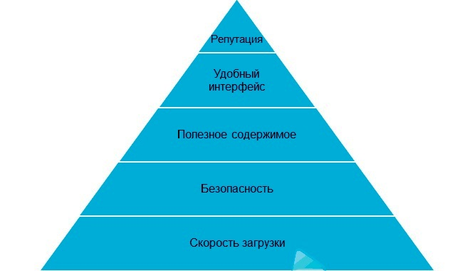
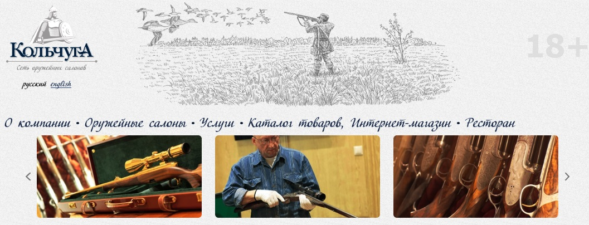
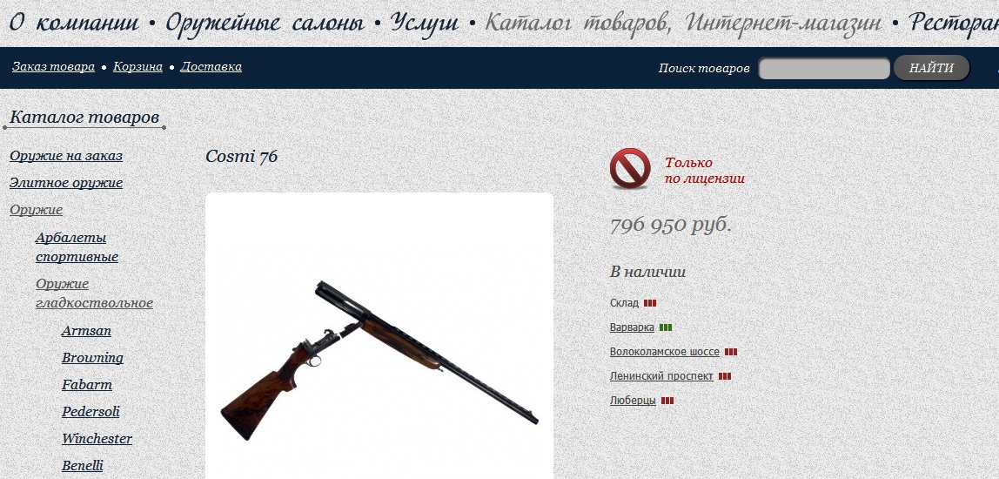
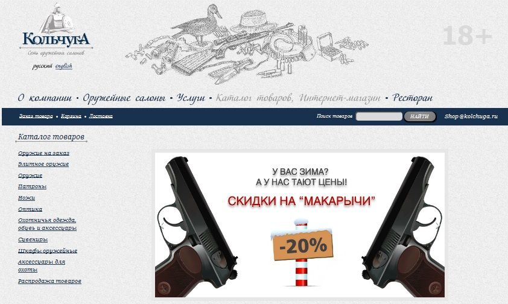
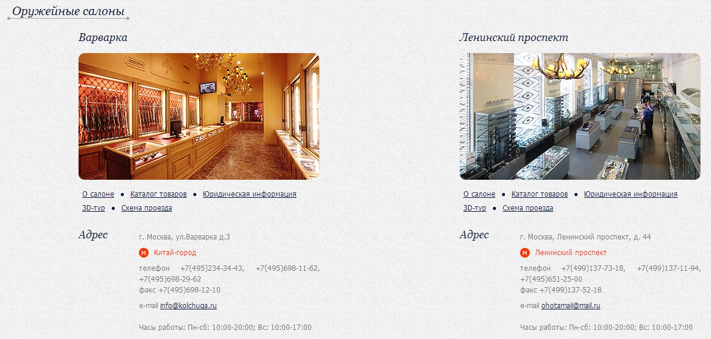

Кочубей Алексей Кочубей Алексей

|
 |
|
Анализ Сайта
www.kolchuga.ru

Что нравится пользователям:
1. Считаю, что вершиной пирамиды качества является репутация, как в глазах пользователей, так и в «глазах» поисковых систем. Безусловно, постоянно и быстро работающий сайт, без вирусов и спама, с полезным и уникальным содержимым, а также с продуманным и удобным интерфейсом - это великолепно. Но при этом его репутация важна. Если всего вышеперечисленного, в принципе, можно достичь при помощи технических средств и проектирования, то репутацию необходимо заслужить и постоянно поддерживать. При этом, качественный сайт с технической, организационной и информационной точки зрения можно получить сразу после его запуска в сети (если перед этим много и кропотливо поработать). А вот репутацию сразу после запуска не удается получить. Её нужно зарабатывать в течение времени. Для каждого типа сайтов (блогов, форумов, интернет-магазинов) репутация носит разную степень важности и способ её получения отличается друг от друга. Но, в любом случае, это постепенный и продолжительный процесс, требующий не только технических средств, но и организационных.

2. Удобный интерфейс
Под интерфейсом будем понимать не только дизайн в смысле графического (эстетического) оформления, но и навигацию, поиск, кнопки социальных сетей, комментарии и т. д. Для упрощения отнесём сюда и структуру сайта, оформление содержимого, структуру URL адресов, пр.
Под удобным интерфейсом понимаю то, что все элементы находятся в таких местах, которые удобны целевому пользователю, этими элементами легко пользоваться, они не вызывают двусмысленности и служат полезным дополнением к содержимому сайта.

3. Полезное содержимое
Итак, если пользователь перешёл на Ваш сайт, сервер\сайт работает, сайт\сервер безопасен, страница быстро загрузилась (или её вспомогательные элементы продолжают грузиться), тогда пользователь приступает к самому для него главному – к изучению содержимого. Ради чего он сюда и зашел, а не посмотреть на дизайн, навигацию, структуру и т. д. Под содержимым понимаю всё, что есть на сайте (текст, видео, аудио, веб-приложения, файлы для загрузи и пр.), кроме элементов интерфейса и дизайна (дизайн в узком смысле – визуальное оформление). Даже on-line игра или переписка в социальной сети, в данном случае, относится к контенту. Скорее всего два последних примера – это веб-сервисы. Даже товар, который продаётся в интернет-магазине, в данном случае будем принимать за контент сайта.

4. Безопасность
Под безопасностью подразумеваем факт, что сервер и сайт должны быть максимально защищены от несанкционированного доступа злоумышленников и не содержать вредоносного кода. К защите сайта от несанкционированного доступа также можно отнести защиту от спама и модерацию. Так как в спам-сообщениях могут встречаться ссылки, ведущие на вредоносные и мошеннические ресурсы..

5. Скорости загрузки
На мой взгляд, это второе, что «видит» пользователь. На сайт пользователь может попадать из различных источников (поисковых систем, закладок в браузере, ссылок из других сайтов, ссылок в почтовых письмах и т. д.). Независимо от источника перехода, время, после которого пользователь подтвердит своё желание перейти на Ваш сайт (нажав на ссылку или нажав на клавишу Enter в адресной строке, куда он ввёл URL Вашего ресурса), до появления первых элементов страницы должно быть минимальным. Сервер должен максимально быстро среагировать на запрос и выдать ответ. Специально написал «до появления первых элементов страницы», а не «до полной загрузки всех элементов страницы».
|
|